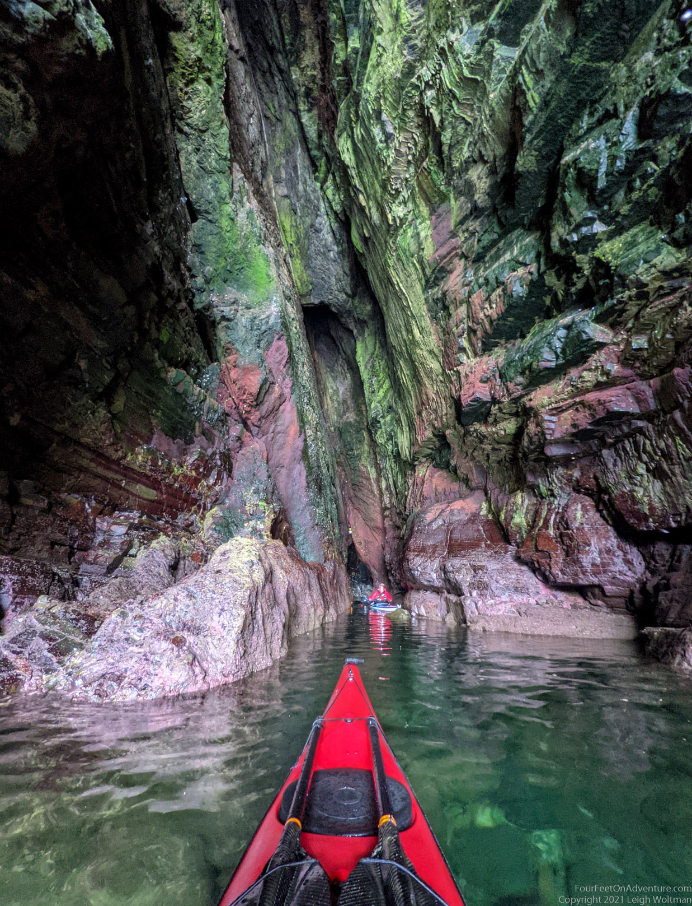

Always fancied a long weekend in Wick? So did we. To be more honest, after the lock-down we were looking for a change of scenery and I found the cutest little airbnb tiny house in Wick, which probably was the main reason we ended up in Wick.
We both did our research, Leigh looked into food, I looked into runs and hikes, and together we looked into paddling. Wick is a fishing town in the North East of Scotland. This part of the coast has absolutely beautiful clifs. This makes kayaking a bit intense, because there aren’t that many opportunities to get in or out, and if something were to happen, you’d find yourself in a bit more of a pickle then when you can just go ashore. But planning can mitigate much. We hadn’t explored the coastline around Wick yet, and this was a great opportunity to do so, if the wind would play ball, which it did. Yay!
Up we went on Friday, with a car full of gear. A few snack stops on the way made the journey longer but also more fun, and at some point we arrived. The airbnb was a bit strangely located on the airport road, only a short distance from the entrance, but, as this is one of those super small airports where almost nothing happens, that seemed possible. But then we saw a sign for the nuclear library. Would the UK store all their nuclear waste here? We were not too keen to be sleeping next to that. However, after a bit of googling we found out that all the UK’s documents concerning nuclear topics were stored in this building next to us, the size of a few football fields with a scary looking fence. Who knew.. We settled and explored the town and harbour a bit before finding some take-out and off to bed.
Saturday was kayaking time. Annette went for a morning-run in the back-lands since we had to wait for the tide to be in our favour, and we drove a bit out of town to a little harbour attached to a beach to launch from.
It was calm, but also very foggy. We had hoped it would clear up, but no such luck. It wasn't very far to the first castle, unsurprisingly since the coast is littered with castles. Amazing how this one seems to rise out of the rocks, made extra mysterious by the foggy surroundings.
Just around the bend, at the top of the peninsula was a lighthouse, another feature that litters the Scottish coast. It was difficult to spot in the mist, as it wasn't very high off the ground, for the reason that it was already standing on quite a high cliff
Cliffs, birds, and lots of exploring of caves and sea-stacks made this a rewarding and fun trip.

We paddled into Wick, and were so hungry that we managed to eat a massive all-day breakfast followed by fish-and-chips. Tired with full bellies we crawled into bed.
We woke up reasonably early on Sunday morning. We decided to check out Wicks tidal pool and go for a swim just the way generations of people have done before us since 1904.
We managed a quick shower and cup of tea before we had to check-out, and off we went for another coastal adventure. We had explored the cliffs north of Wick on Saturday, now it was time for the cliffs south of Wick. We chose a small paddle, only 5 km or so. But, if you’re exploring the coast-line, don’t be fooled, we ended up somewhere around 15 km.
This section was even more amazing. Cliffs were higher, and, because it was still very foggy, every new stretch held a surprise. There were many little water connections behind sea stacks and we played around rocks and passages forever.

Our turn around point was a very large sea stack on the map, but when we got there, we realized it was a sea stack of about 200 meter long, with a tunnel through the middle. Absolutely amazing, and extra special effects were added by the fog. Birst were breeding on the outside and the parent not sitting on the egg was flying around us or just floating about in the ocean. We saw razorbills and even a few puffins, of which one seemed to be the head of a pack of guillemots.
We paddled this cave many times and couldn’t get enough of it, but eventually realized it might be time to head back.

We picked up the most amazing bangladeshian food on the way back, and drove back home. As soon as we were 2 km out of Wick we started to realize the whole of Scotland was in a warm sunny spell, except foggy Wick, but oh well. We enjoyed our trip thoroughly and it made it that much more mysterious, though a little cold.